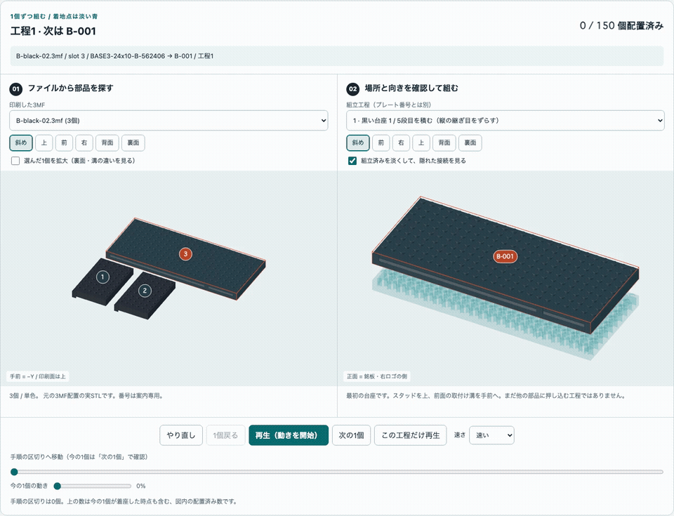

印刷した部品を、どこから・どう組む？
個人向けB（本人公開許可済み）：
説明・作り方 ／
3D工程 ／
写真記録。
別サイトへの案内です。この汎用版の USER 表記・匿名化写真・印刷データはそのままです。
実物写真の制作記録：個人向けBの完成報告（09/25）。 台座から顔下部、ゴーグルの上枠と紫の頭頂まで揃う過程を記録しました。 実写真と以下の説明用3DCGを区別し、このガイドのmagenta／green配色や印刷データは変更していません。
印刷するファイルの順番と、組み立てる順番は違います。
色別プレートは効率よく並べた印刷用の配置で、ファイル末尾の 01 は台座の1段目という意味ではありません。
このガイドは、実際に配布しているSTL・3MF配置・組立番号を結び、1個ずつ取り出して載せるためのものです。
| 印刷した案 | 3Dで仕分け・組立 | オフライン版 | 最初に取り出す部品 |
|---|---|---|---|
| A | Aの3Dガイド | A ZIP | A-black-02.3mf のslot 3 → A-001 |
| B | Bの3Dガイド | B ZIP | B-black-02.3mf のslot 3 → B-001 |
| C | Cの3Dガイド | C ZIP | C-black-04.3mf のslot 2 → C-001 |
オフラインZIPを展開して index.html をダブルクリックします。ローカルサーバー、CDN、ログイン、ネット接続は不要です。
Chrome / Edge / Firefox / Safariの現行版を使ってください。
オフラインZIPは閲覧用です。印刷STL・3MFは別PCでの印刷手順から保存します。
別の案を混ぜないでください。公開の文字は実形状でも USER の汎用表示です。
Bを印刷した方へ：最初の1段
B-black-02.3mf には3個あります。大きな1枚、slot 3 / BASE3-24x10-B-562406 が
唯一の B-001 です。スタッドを上、前面の取付け溝を手前へ置きます。
下図の左が元の印刷配置、右が組立側です。番号は案内用で、実物に刻印されていません。

B-black-01 を刷り終えただけでは、1段目はありません。
その中には2〜5段目に使う溝・端の部品が入っています。違う形なのに、無理に1段目のように並べないでください。

台座の全5段を揃えるには、Bの黒 01・02・03・04 の対象部品が必要です。
同形同色の BASE3-06x10-T-838259 は6個あり、黒03に4個、黒04に2個入っています。
黒04の2個を忘れないでください。便宜上は5段目の B-016 / B-017 に割り当てていますが、
同じID・同じ色の6個の間では交換できます。
3Dガイドの使い方
- 刷ったファイルを選ぶ。 左の「印刷した3MF」で、保存したファイル名と一致するものを選びます。 実プレートの形・位置とslot番号が出ます。Bambu Studioで再配置した場合、この番号はその新しい表示順ではありません。
- 実物を見比べる。 図内の番号か、下のslotボタンで選びます。part ID・寸法・必要個数を確認します。 「選んだ1個を拡大」→「裏面」「背面」を使い、下面空洞・溝・端の形を確認します。 同じ外形寸法でも溝の異なる台座部品があります。寸法だけで同一品と判断しません。
- 使える場所を全部見る。 右側では同じpart ID＋同じ色の全候補が濃く表示されます。 「使える組立場所」から番号を選ぶと位置が分かり、「ここから組む」でその直前まで組み上がった状態へ移れます。 別の場所から開始する場合は、前の工程が実物でも揃っていることを確認してください。
- 空の机から順番に。 「やり直し」または工程0は空の状態です。「最初の1個」から、 「次の1個」「1個戻る」、再生／一時停止、「この工程だけ再生」で進みます。 動いている部品の 3MF名・slot・part ID・組立番号・工程 が、常に図の上に表示されます。
- 接続を見たい時は淡く。 「組立済みを淡くする」を入れると隠れた位置が見えます。 色や完成状態を確認する時は外します。前・右・上のボタン、ドラッグ、ズームでも見られます。
「便宜割当」は仕分けのために安定させた例です。同じ形・同じ色の部品に固有のシリアル番号はありません。 その1個だけの行き先とは断定せず、全ての取り出し元と全ての適用先を並べています。 異なるpart ID・異なる色を混ぜたり、必要数を減らしたりしてよいという意味ではありません。
台座5段 → 銘板と右ロゴ → keeper
下の短いアニメは、Bの最初の24個（工程1〜7）を実STLから表示しています。 各フレームにファイル名・slot・部品・組立番号を付けています。説明用3DCGで、Blenderの再レンダーや物理試験ではありません。

一時停止できるMP4を保存。 細かい動きは対話3Dガイドの工程6・7でゆっくり再生してください。
銘板と右ロゴは印刷時には平らです。表面を正面へ90°起こし、keeperを付ける前に、溝の上から差し込みます。 前から押し込む組み方ではありません。両方が着座してから、銘板用2個・ロゴ用1個のkeeperを載せます。 その後、顔の1段目から頭頂までを同じガイドで進めます。Bは全150個で、試験片は別です。
取り外しは逆の順です。keeperを上へ6 mm、前へ32 mm以上離して脇へ置き、 対象モジュールを45 mm以上上抜きしてから手前へ。接着剤は不要です。 これらは設計上の案内寸法であり、実物で強く引いてよいという意味ではありません。
印刷・実物確認の境界は変わりません
NOT_SLICED。実物の嵌合、keeper保持、強度、転倒は未試験です。 先にFIT、NP3-FIT、7個の少量試作。7個の成功は完成品全体の保持合格ではありません。 穴の閉塞・白化・つかみにくさ・着座不良・強い力が必要なら、全数印刷と組立を止めます。 無理押し、打撃、穴を全て削って合わせることを完成キットの前提にしません。
黒・シアン・マゼンタ・緑は単色。文字と右ロゴは黒地一体レリーフなので、白い独立小片ではありません。 黒支持体の境界は文字2.4 mm、ロゴ2.8 mm。実レイヤープレビューで、最初の白い経路の直前にPauseを入れます。 汎用3MFにPause、実P1Sプロファイル、G-codeは入っていません。